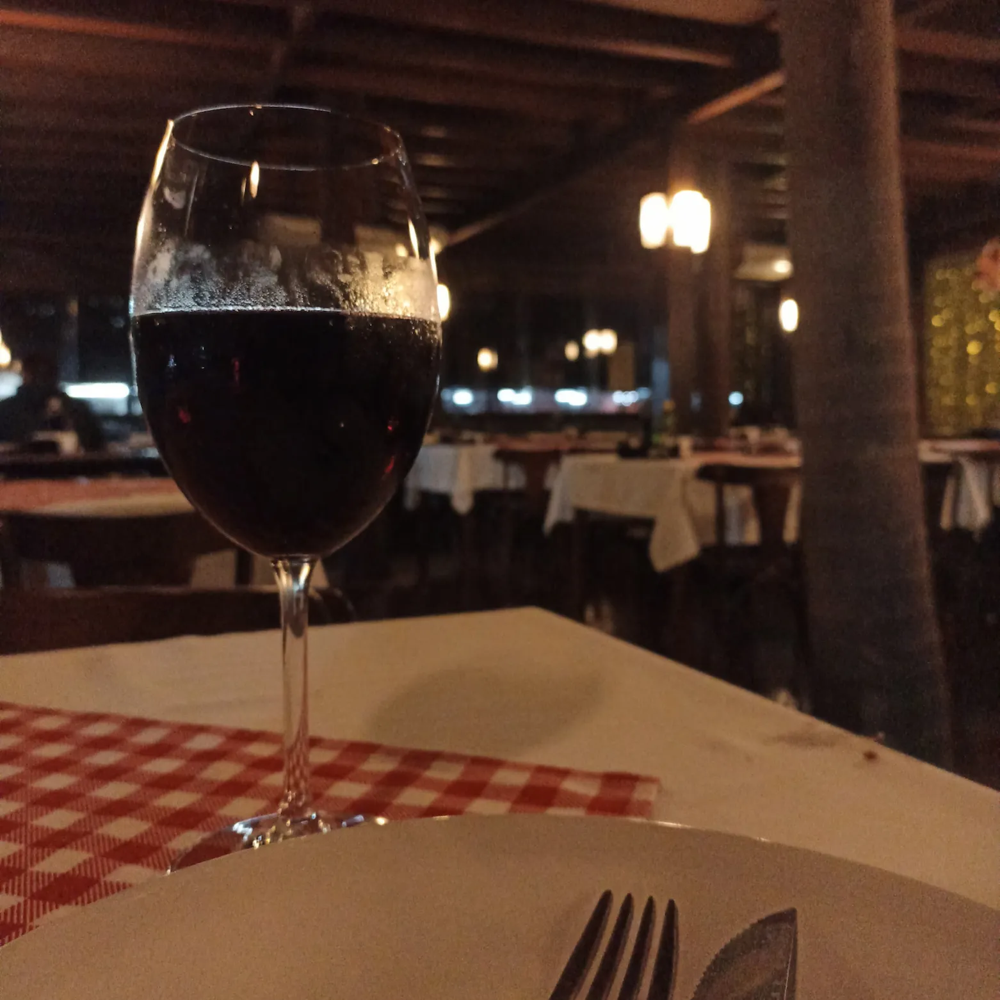
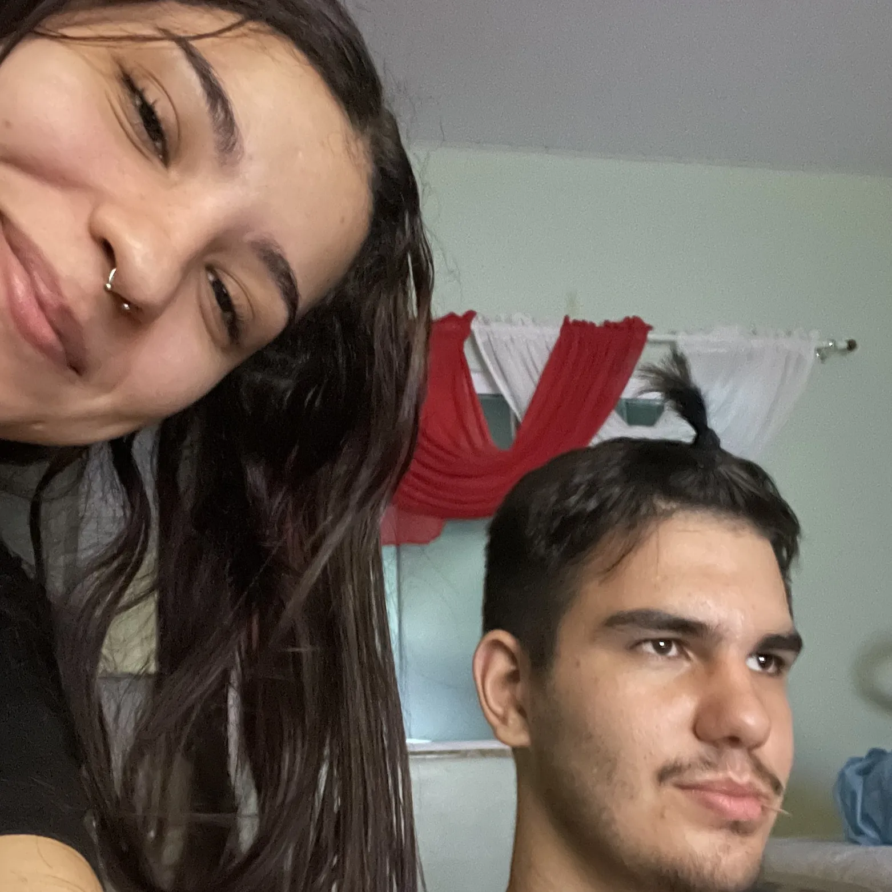
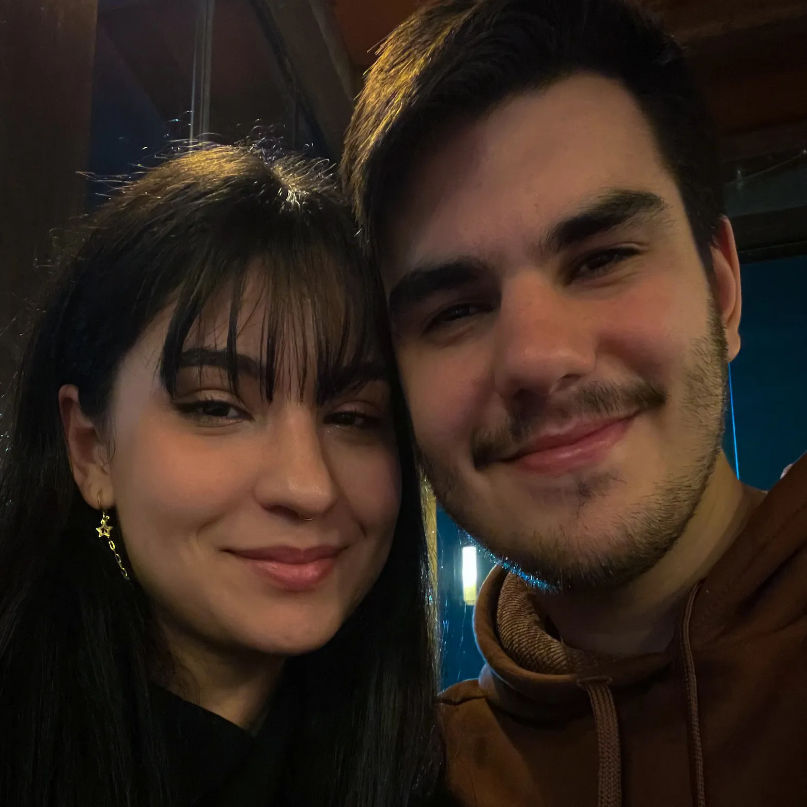
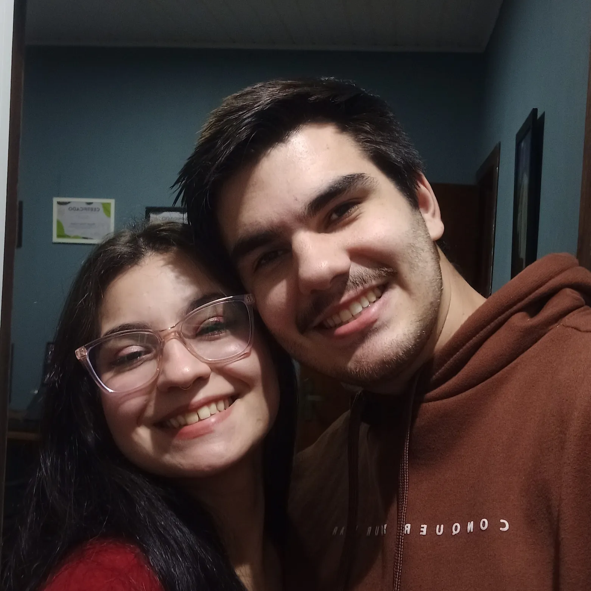
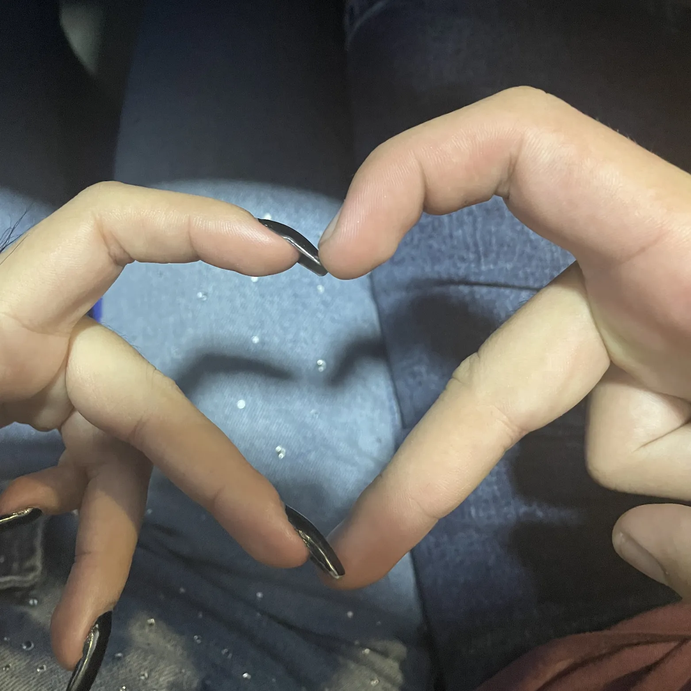
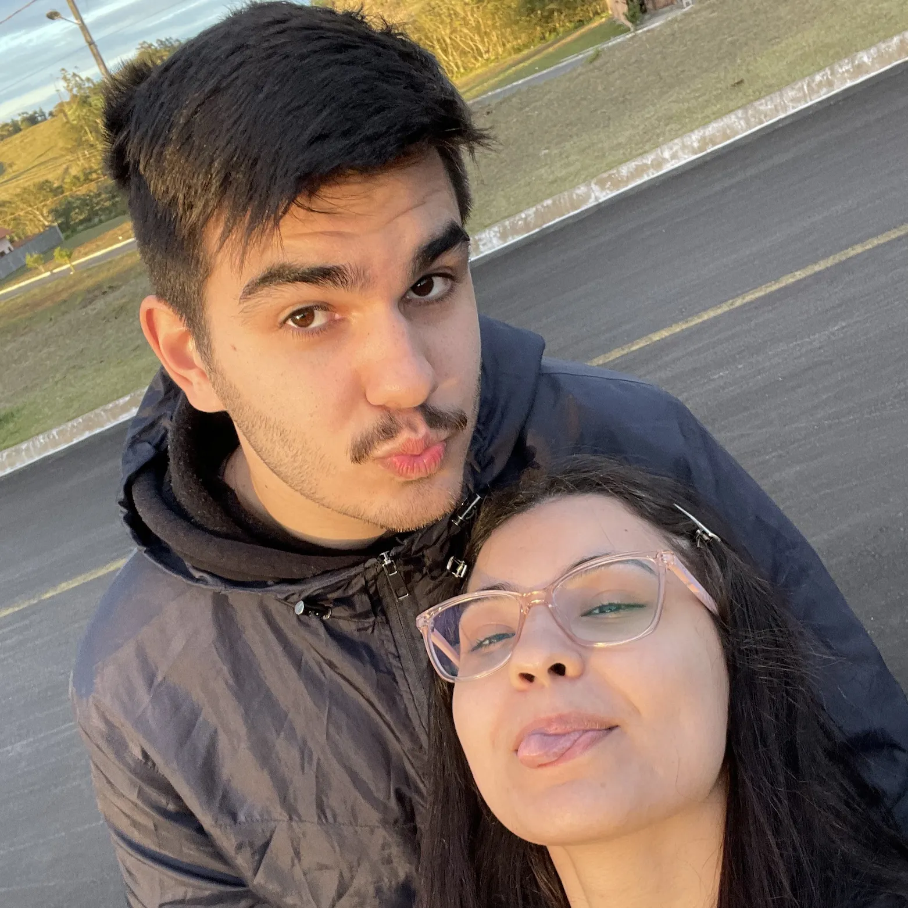
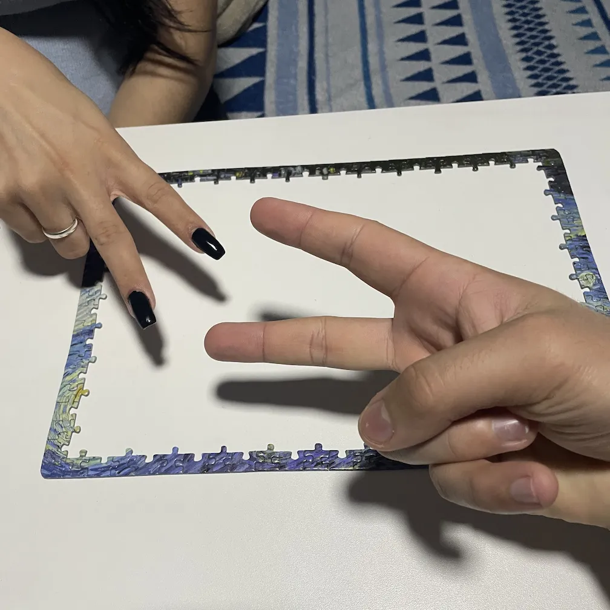
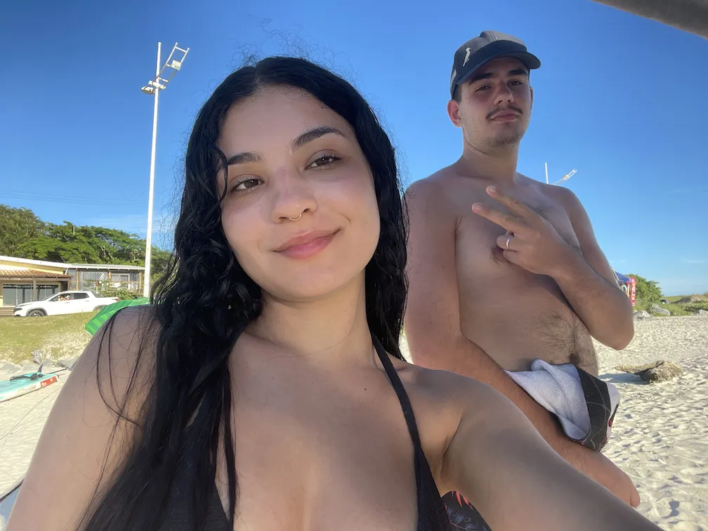

✦
desde 29 · 03 · 2024
nossa história
alguma das nossas melhores memórias,
todas aqui para a gente meu amor ❤️










desde 29 · 03 · 2024
alguma das nossas melhores memórias,
todas aqui para a gente meu amor ❤️







